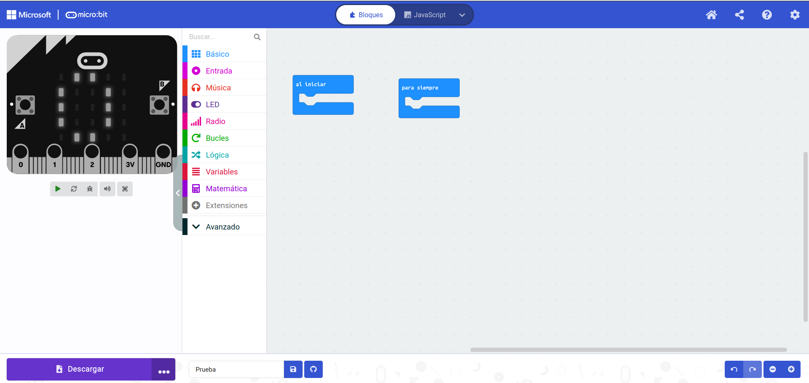

- Tenemos que acceder a la página https://makecode.microbit.org/. Indicamos el nombre del proyecto y ya tendremos una página similar a la siguiente:

- Podemos distinguir tres secciones:
- Parte izquierda: simulador de la placa
- Parte central: instrucciones que podemos usar (en forma de bloques o con lenguajes como Python o JavaScript). En nuestro caso utilizaremos los bloques, que es la opción por defecto
- Parte derecha. Zona de programación. Es similar a la que ya hemos usado con Scratch